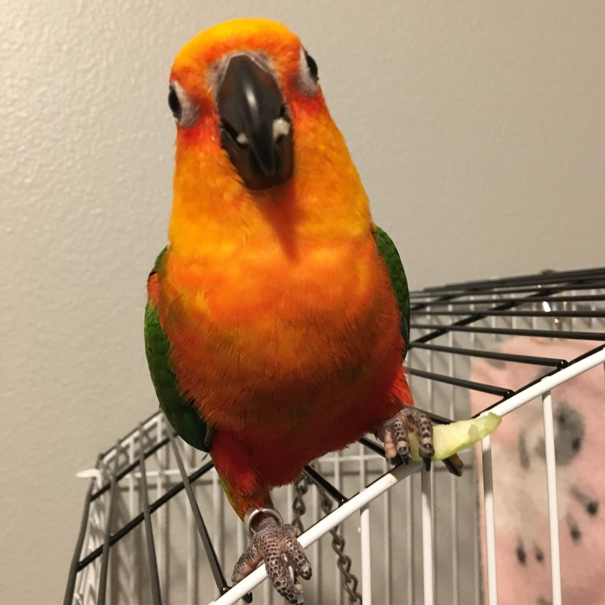

Hello, Welcome to Ricci's World!
Please take time and read more about Ricci.
Introduction
Ricci is a male Jenday Conure. He was hatched on January 14th. His biological mother is unknown,
although I got him a year ago and raised him. He is very affectionate and playful little bird. He likes
to spend time outside of his cage and chew on things. He loves eating dried fruits, like papaya and pinapples.
I love Ricci and you should to. Here is why:
Reasons to Love Ricci
- He's handsome
- He will sing to you
- He's cute
- He listens and talks to you
As if that wasn't enough, here's a picture of him:
Ricci

Ricci on social media:
Ricci's Instagram:
Below, you can submit your compliments for Ricci